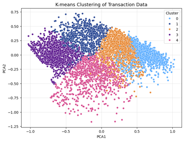
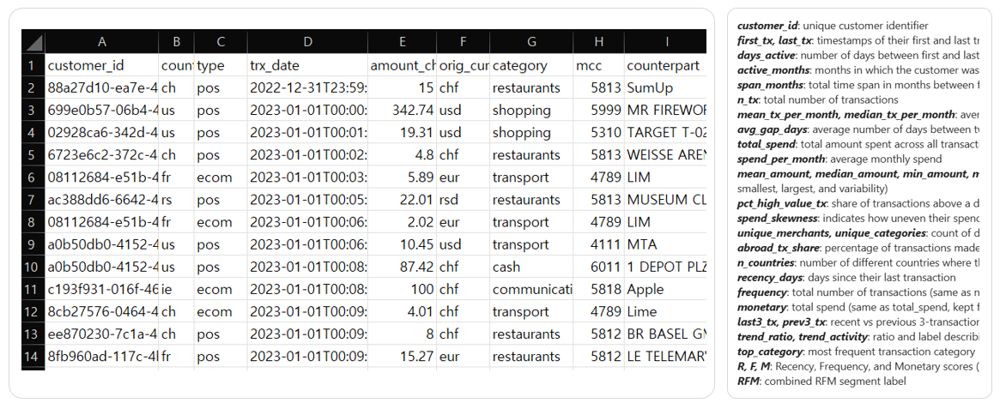

Development Process
1. Overview

Goal: Identify customer segments based on transaction behavior
Dataset: 3 years of Yapeal transaction data
Methods: Feature engineering, PCA, K-means clustering
Outcome: 5 distinct customer segments with business insights
2. Data preperation & preprocessing
Original dataset: customer_id, country, type, trx_date, amount_chf, orig_currency, category, mcc, counterpart
Method: Aggregated transactions at the customer level and created derived features
Result: Added indicators for
Activity span and frequency
Spending level and variability
Merchant and category diversity
Recency–Frequency–Monetary (RFM) metrics

[The original dataset and new variables]
3. Chatbot Configuration & Improvements
Reference Area Display: Implemented to enhance response credibility by showing relevant source information. Only 'chunk', 'disease', and 'source fields' are extracted for improved data reliability and faster verification.
Parameter Settings: Configured with strict=5 and temperature=0.1 to ensure accurate and reliable responses.
Context Retention: Stores up to five previous responses to allow for follow-up questions and context-aware interactions.
Multilingual Support: Translates user queries into English before sending a request to the GPT model, improving search performance. Detects the language of the original question and returns the response in the same language for seamless multilingual support.

[Test screen using Gradio: Enhances data reliability through reference areas.]
[Citation output settings and language detection functions]
4. Response Performance & Reference Area Matching Test
- Responses are reviewed by practicing physicians and validated through Human Evaluation.
- Received direct feedback from physicians expressing interest in using the chatbot in real-world medical settings.
- Conducted over 100 tests to verify the alignment between generated responses and reference areas, ensuring accurate outputs.

[Using gradio to validate citation area during development]
5. Flask Server Deployment & CI/CD Configuration
Deployed Flask app to Azure App Service and configured environment variables.
Set up GitHub Actions CI/CD for automatic deployment on main branch updates, handling Python setup, dependencies, build, and deployment via .yml file.
[App deployment and GitHub actions integration]
 GitHub
GitHub